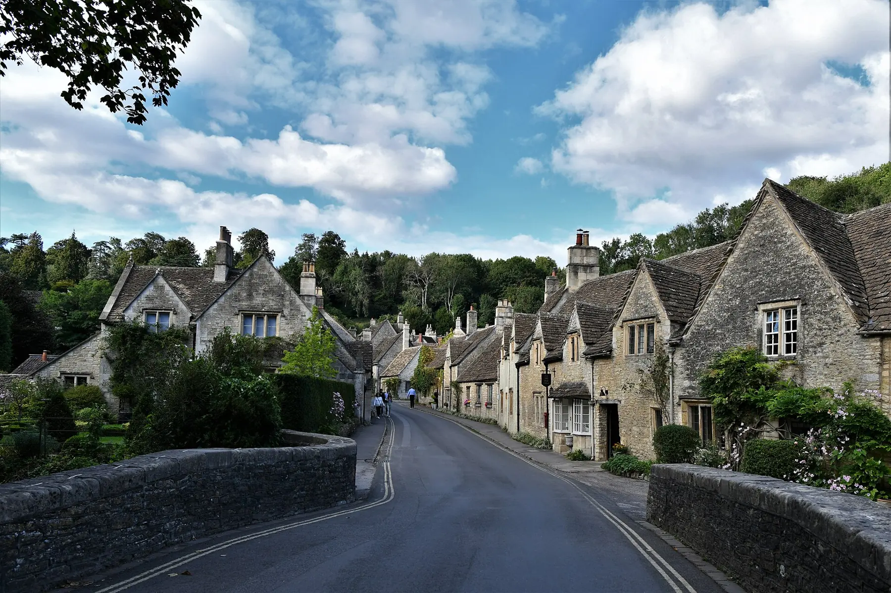
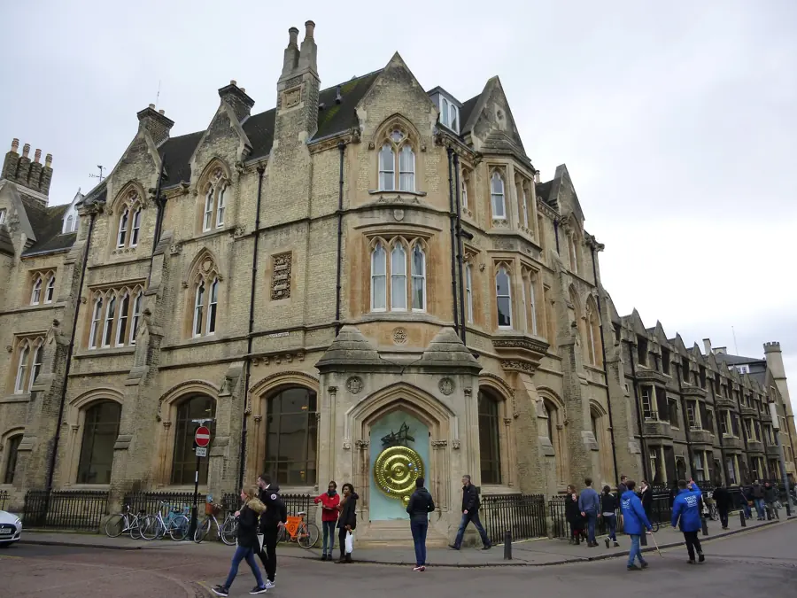
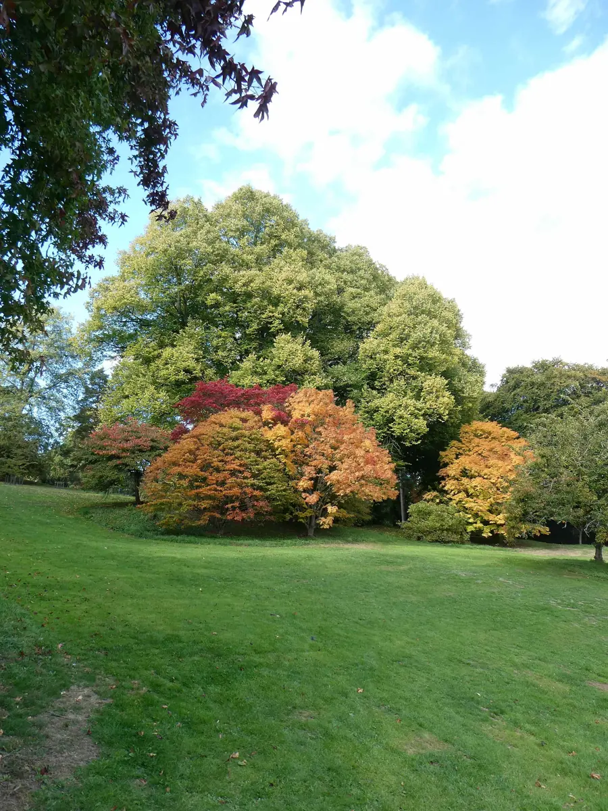
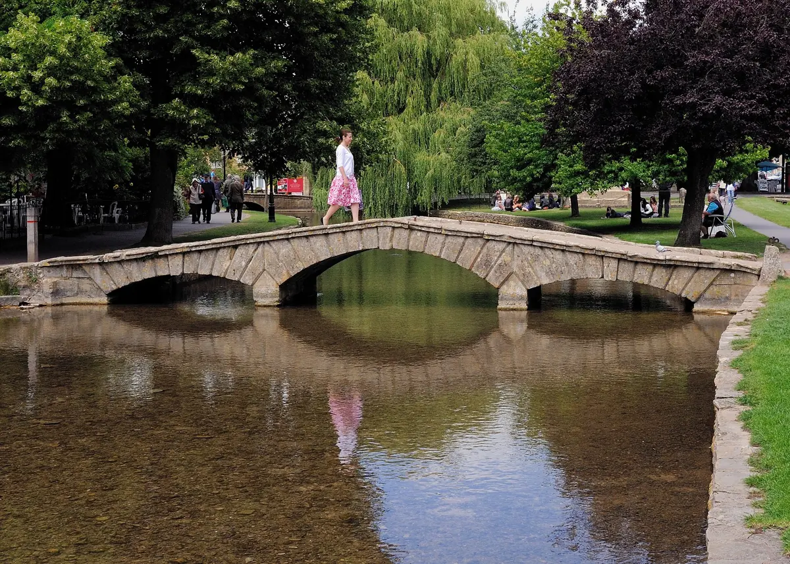
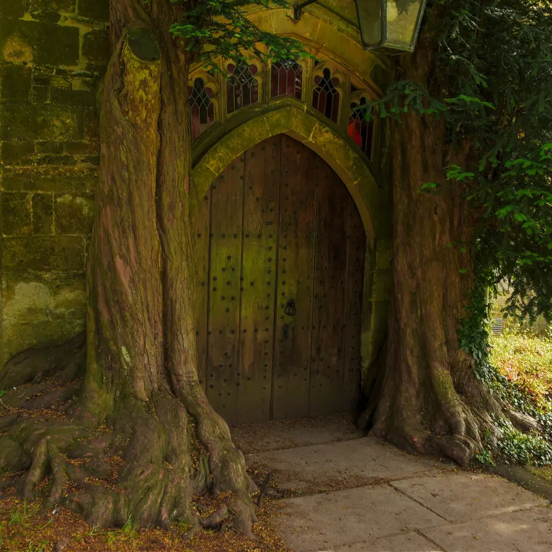
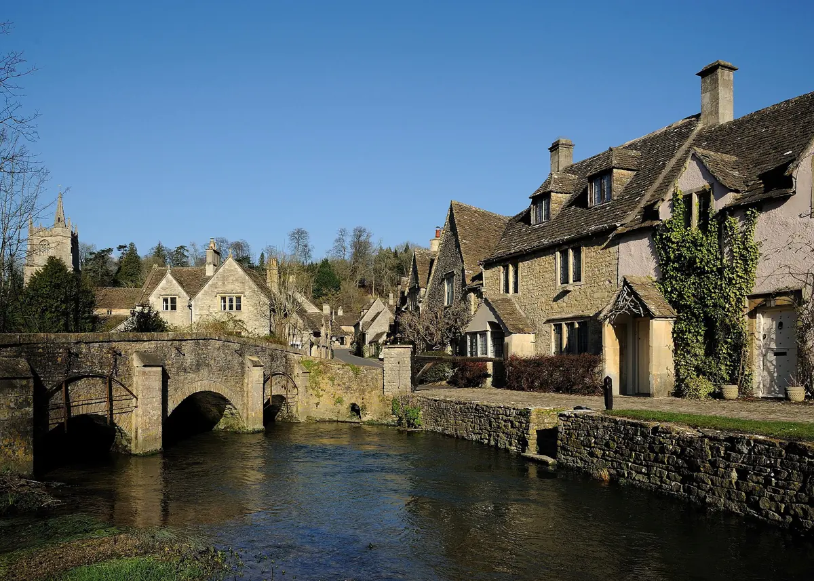
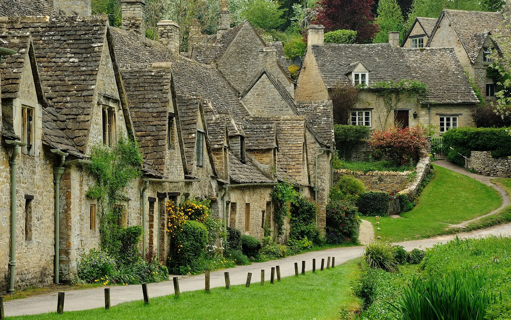
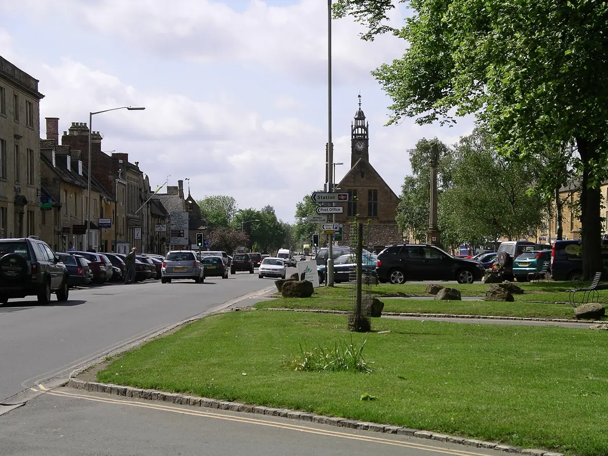

King's College
- Lo fundó Enrique VI en 1441.
- La capilla tardó 70 años, de 1446 a 1515, con la guerra de las Dos Rosas por medio.
- Tiene la bóveda de abanico más grande del mundo.

Michael Garlick, CC BY-SA5–9 nov 2026 · Cambridge, Cotswolds, Oxford
ETA (permiso de entrada al Reino Unido): £16–20 por persona, solo en gov.uk/eta. Pasaporte: el DNI no vale.
Cena del jueves: Parker's Tavern o Hobbsons; cancelar la otra.
King's College y batea del viernes.
Entradas de Batsford: £54,50 en total, online.
Rattlebone Inn: platos y alergias. Falta su carta y si exigen tres platos.
Alergias a los restaurantes, parking en Oporto, devolución del coche.
Henne (vie 20:00, menú £90 por persona) o Wild Rabbit (lista de espera). Sin reservar.
Penalizaciones (hora UK; Galicia +1 h)
FR520 15:20 · 49 km · cena 20:30 · Wilde Cambridge
Hora gallega.
Hora portuguesa. Control de pasaportes.
Llega 17:45.
Car Rental Village. 49 km por la M11, ~45 min.
Maletas en la puerta; sin parking.
13 min a pie. Gratis 18:00–08:00.
Elegir una antes del 26 oct.
1 km por Trinity St, King's Parade, Market Sq y Green St. Ruta
Dos mesas a las 20:30: elegir una.
Brasserie británica · 13 min a pie
Sin depósito. Pago solo con tarjeta.
o bien
Pasteles de carne (pies) con puré · 15 Trinity St
Sin depósito.
Elegir antes del 26 de octubre
Colleges y batea · 15:15, 168 km a Moreton-in-Marsh
Round Church, St John's, Trinity Street y el puente de Garret Hostel.
Sin entrada. £16–17. Horario. Si no, King's Parade.
Después, Mathematical Bridge desde Silver St.
Sin reservar. 45 min por los Backs. Scudamore's, Mill Lane; mejor batea privada.
Reservado. Comedor.
168 km, 2 h 20–2 h 40. Llegada 17:35–18:40. Ruta
Reservado. 5 min del hotel.
13:00 · 10 Peas Hill
Alternativa sin reserva: Bread & Meat, £18–25. En ese caso, cancelar Pint Shop.
20:30 · Bourton-on-the-Hill · Michelin
Cancelación gratis hasta jue 5, 20:30 (hello@pubonthehill.com). Después £30 por persona; no ir, £50. Reconfirmar en ResDiary 24 h antes.
A nombre de Iria

Batsford, Bourton, Lower Slaughter, Stow · 34 km
Sin entradas. Pedir en taquilla el circuito de 1 h con mejor color. Cierra con viento: web.
High St, río Windrush, puentes, Victoria St.
Reservado. Hasta 14:45.
Río Eye hasta el Old Mill. Opcional: a pie a Upper Slaughter, 3,2 km.
Puerta norte de St Edward's antes de que oscurezca; luego Market Sq. Pub o Huffkins (cierra 16:30).
Reservado. 12 min en coche.
13:00 · Bourton-on-the-Water
Cancelar antes de mié 4, 13:00 (dining@themousetrapinn.co.uk): devuelven £45.
20:45 · Lower Oddington
£175 si se cancela tras sáb 16:45 o no se va.
A nombre de Iria



Castle Combe, Sherston, Bibury · 167 km · monedas para el parking
~80 min.
15 min a pie al centro.
Market Cross, St Andrew's, The Street, puente del By Brook. La foto: desde el puente, hacia la calle.
16 min.
Reservado. Salida pedida a las 14:15.
42 min. Parking gratis en The Street o de pago en la Trout Farm. Info
Arlington Row primero, con luz. Luego puente, Rack Isle y río Coln.
Bar sin reserva; el domingo quizá cierra a las 17:00.
Reservado. En el hotel.
13:00 · Sherston
Piden tres platos por persona por adelantado. Preguntado el 15 oct si vale con menos y pedida la carta actual: sin respuesta.
20:30 · en el hotel
Mirar carta y precio antes.
A nombre de Iria


Oxford hasta las 11:45 · 204 km a Stansted · FR1261 17:20
Llegada 09:20–09:45.
Plaza no garantizada. Info
Planta baja gratis; patio de las Old Schools si abre. Horarios
Radcliffe Camera por fuera, Catte St.
En el Covered Market, abre 09:00. Si hay cola, nada.
Límite 12:00. 1 h 50–2 h 15 + 45–60 min para gasolina y devolver el coche.
Puerta a las 16:50.
Llega 19:45 (20:45 en Galicia).
En lugar de parte del paseo. Sin reserva.
Tostadas francesas, shakshuka. No reservan.
Desayuno inglés.
Ida: FR520, jueves 5, Oporto 15:20 → Stansted 17:45.
Vuelta: FR1261, lunes 9, Stansted 17:20 → Oporto 19:45.
Jueves: Wilde Cambridge, Round Church Street.
Viernes a domingo: The Manor House, Moreton-in-Marsh.
| Cuándo | Dónde | Referencia | Si se cancela |
|---|---|---|---|
| Jue 20:30 | Parker's Tavern, o | en el correo | Sin coste |
| Jue 20:30 | Hobbsons | en el correo | Sin coste |
| Vie 13:00 | Pint Shop | en el correo | Sin coste |
| Vie 20:30 | Horse & Groom | en el correo | £150 desde jue 20:30 |
| Sáb 13:00 | The Mousetrap Inn | en el correo | £50 desde mié 13:00 |
| Sáb 20:45 | The Fox at Oddington | en el correo | £175 desde sáb 16:45 |
| Dom 13:00 | The Rattlebone Inn | en el correo | Sin coste |
| Dom 20:30 | The Mulberry | en el correo | Sin coste indicado |
A nombre de Iria. Referencias y teléfonos: en los correos de confirmación (no se publican aquí).
Henne: mesa ofrecida el viernes a las 20:00, menú de 6 platos a £90 por persona, depósito de £25 por persona, plazo de devolución sin aclarar. Wild Rabbit: lista de espera vie y sáb. Mientras tanto siguen Horse & Groom y The Fox.
Batsford cierra con viento fuerte. Con lluvia, más pueblo y pub. Calzado con agarre.
